1.工具条简介
全部命令可以从屏幕左侧工具条上的按钮来执行。 当光标指向各按钮时系统会立即提示其功能名称，同时在屏幕底部的状态栏里显示该功能的详细说明
建立新NC文件
打开保存的文件(如NC文件)
保存文件(如NC文件)
另存文件
机床参数
刀具库管理
工件显示模式
选择毛坯大小、工件坐标等参数
开关机床门
屏幕安排：以固定的顺序来改变屏幕布置的功能
屏幕整体放大
屏幕整体缩小
屏幕放大、缩小
屏幕平移
屏幕旋转
X-Z平面选择
Y-Z平面选择
Y-X平面选择
机床罩壳切换
工件测量
声控
坐标显示
铁削显示
冷却水显示
毛坯显示
零件显示
透明显示
ACT显示
显示刀位号
刀具显示
刀具轨迹
在线帮助
录制参数设置
录制开始
录制结束
示教功能开始和停止
2.文件管理菜单
打开
相应的对话框被打开，可进行选取所要代码的文件，完成取后相应的NC代码显示在 NC窗口里。 在全部代码被加载后，程序自动进入自动方式；在屏幕底部显示代码读入进程。
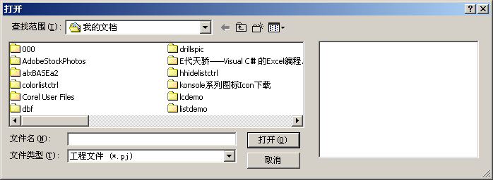
新建
删除编辑窗口里正在被编辑和已加载的 NC 码。如果代码有过更改，系统提示要不要保存更改的代码。
保存
保存在屏幕上编辑的代码。对新加载的已有文件执行这个命令时，系统对文件不加任何改变地保存， 并且不论该文件是不是刚刚加载的，请求给一个新文件名。
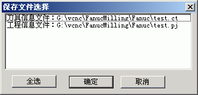
另存为
把文件以区别于现有文件不同的新名称保存下来。
加载项目文件
把各相关的数据文件 (wp 工件文件； nc程序 文件； 刀具ct 文件) 保存到一个工程文件里 (扩展名：*.pj)，此文件称为项目文件. 这个功能用于在新的环境里加载保存的文件.
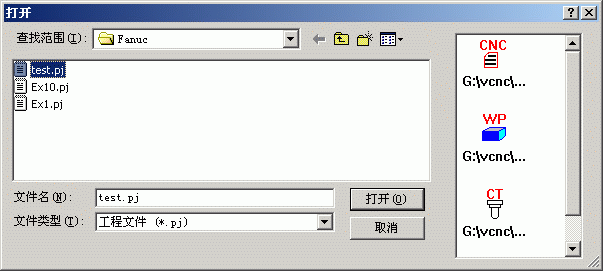
把全部处理过的数据保存到文件里。屏幕的各空白部分可以做修改。
3.机床参
a.机床参数设置：
拖动“参数设置”对话框中的滑块选择合适的换刀速度
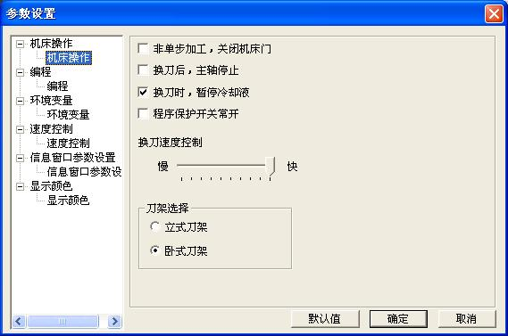
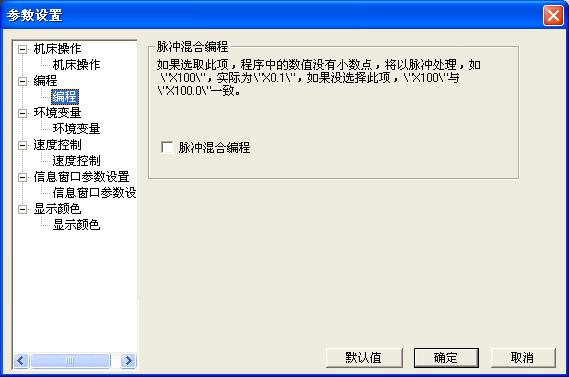
单击“选择颜色”按钮可以改变机床背景色。
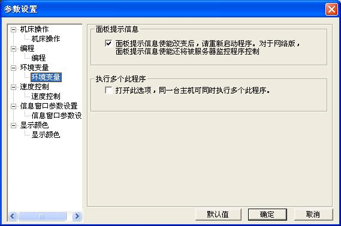
调节“加工图形显示加速”和“显示精度”可以获得合适的仿真软件运行速度。
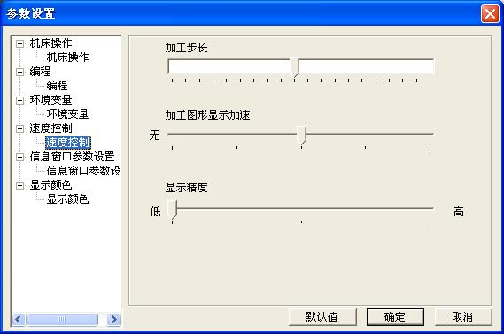
b.显示颜色：
选择刀路和加工颜色后，单击“确定”按钮。
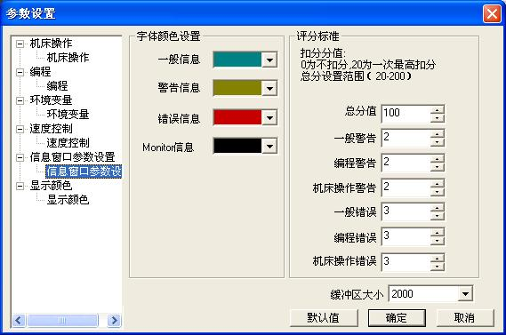
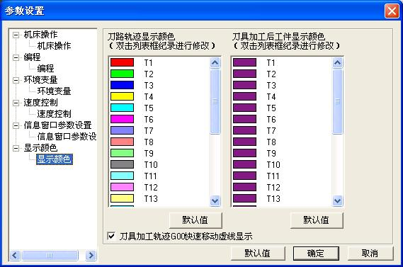
4.刀具管理
a.铣床
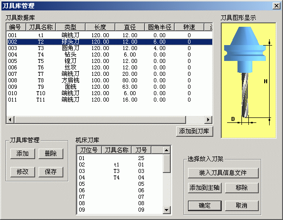
添加
(1).输入刀具号
(2).输入刀具名称
(3).可选择端铣刀、球头刀、圆角刀、钻头、镗刀。
(4).可定义直径、刀杆长度、转速、进给率
(5).选确定,即可添加到刀具管理库
刀具添加到主轴
(1)在刀具数据库里选择所需刀具,如01刀
(2).按住鼠标左键拉到机床刀库上.
(3).添加到刀架上,按确定
b.车床
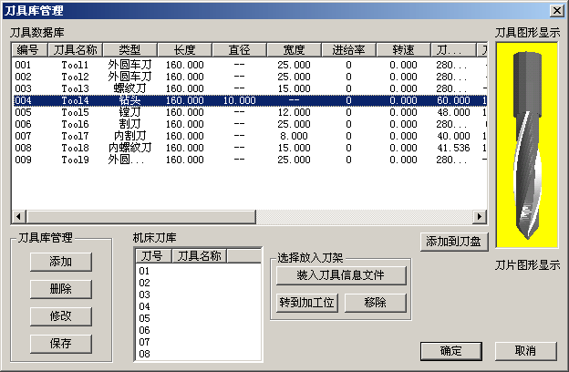
添加
(1).输入刀具号
(2).输入刀具名称
(3).可选择外圆车刀、割刀、内割刀、钻头、镗刀、丝攻、螺纹刀、内螺纹刀、内圆刀。
(4).可定义各种刀片、刀片边长、厚度
(5).选确定,即可添加到刀具管理库
内圆刀的添加：
(1)单击“添加”按钮，弹出“添加刀具”对话框，如下图：
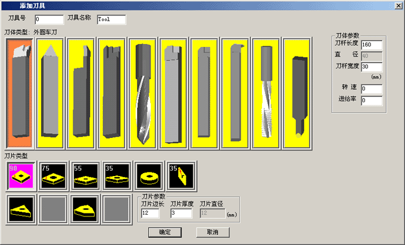
(2)选择“添加刀具”对话框中最右边的圆头刀，弹出“刀具”对话框，如下图：
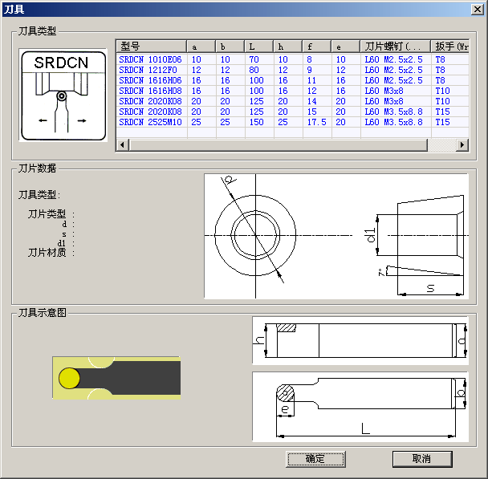
(3)在“刀具”对话框中选择所需的刀具单击确定，返回到“添加刀具”对话框，输入刀具号和刀具名称单击确定，添加刀具完成。
刀具添加到主轴
(1)在刀具数据库里选择所需刀具,如01刀
(2).按住鼠标左键拉到机床刀库上.
(3).添加到刀架上,按确定
5.工件参数及附件
a.铣床
毛坯大小、工件坐标
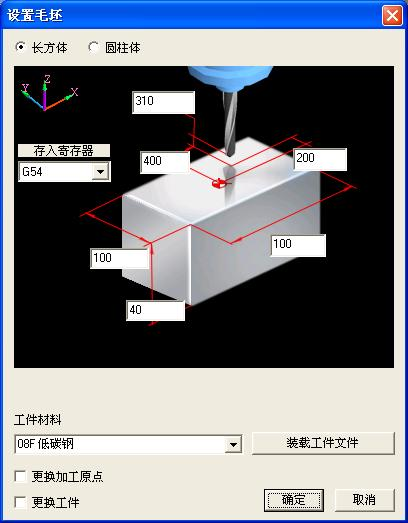
(1)定义毛坯长、宽、高以及材料
(2)定义工件零点X、Y、Z、坐标
(3)选择更换加工原点、更换工件
b.车床
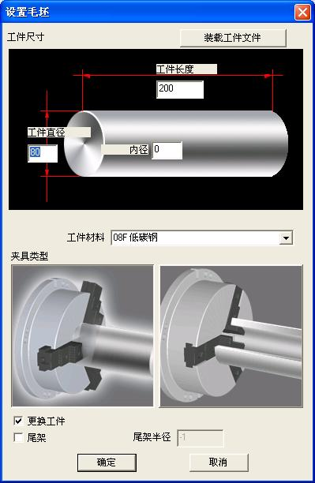
(1)定义毛坯类型，长度、直径以及材料
(2)定义夹具
(3)选择尾夹
选择工件夹具
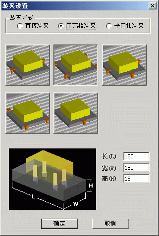
工件放置
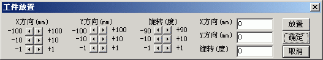
(1)选择X方向放置位置.
(2)选择Y方向放置位置.
(3)选择放置角度位置.
(4)按“放置”和“确定”键.
寻边器测量工件零点 ,在型号列表中选择所需的寻边器
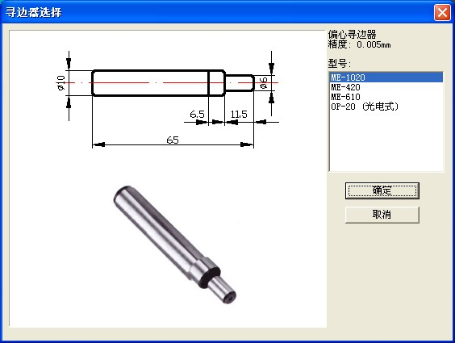
冷却液管调整
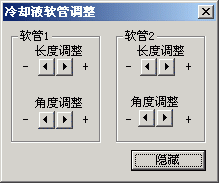
6.快速模拟加工
(1)用EDIT编程。
(2)选择好刀具。
(3)选择好毛坯、工件零点。
(4)方式模式放置AUTO
(5)无须加工，可按此键快速模拟加工
7.工件测量
测量的三种方式
(1)特征点
(2)特征线
(3)粗糙度分布
工件测量可用计算机数字键盘上的向上、向下、向左和向右光标键测量尺寸，也可利用输入对话框。
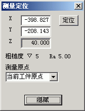
8.录制参数设置
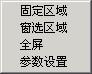
三种录制区域选择方式，参数设置为
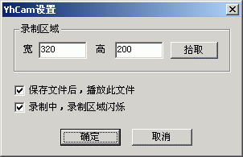
9.工件装夹微调